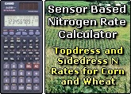

- World Nitrogen Use Efficiency for Cereal Production is 33%
Agronomy Journal, 91:357-363 - World Phosphorus Use Efficiency for Cereal Production is 16%
Agronomy Journal 109:1-8 - Grain Yield Level and Nitrogen Response are Independent (maize and wheat)
Journal of Precision Agriculture, 12:508 - Improving Nitrogen Use Efficiency in Cereal Grain Production with Optical Sensing and
Variable Rate Application. Agronomy Journal, 94:815-820


Latest Updates
NUE version 2.0
Green Seeder
Hand Planter

Sensor Based Nitrogen Rate Calculator,on-line since 2002
I'm interested in improving how I use N fertilizer, what can I do?
Advanced Training in Applied Precision Agriculture
If these were our children, wouldn't we be doing more?
Green Revolution
Experiment Stations,Plot Research
RESEARCH HIGHLIGHTS
>50% NUE? Our Approach
Documentation
Journal Publications
16th annual NUE Conference,Manhattan,Kansas,
July30, to August1,2018 LA
105,890,000 Mg of N fertilizer consumed each year in the world;
60% for cereal production
GreenSeeker Field Results
Do Optimum N Rates Change Each Year
July30, to August1,2018 LA
ALL NUE Conferences
FACT: 20% increase in NUE for the world is worth 25,863,741,747105,890,000 Mg of N fertilizer consumed each year in the world;
60% for cereal production
GreenSeeker Field Results
Do Optimum N Rates Change Each Year
Downloads
Iowa State University, NSTL
University of Nebraska, USDA-ARS
Collaborative Projects
Have Worked with CIMMYT in Mexico,
Turkey,China, Argentina, India,
Russia, and Uzbekistan
 GreenSeeker Sensor activities around the world
GreenSeeker Sensor activities around the world

GreenSeeker Sensor activities around the world
Predicting By-Plant Corn Yields
Precision Ag Equipment
 Can sensor CV's assist in refining fertilizer N?
Can sensor CV's assist in refining fertilizer N?
Hand-Held GreenSeeker Sensors
NUE Facts and Figures
 OSU Soil Fertility Handbook
OSU Soil Fertility Handbook
OSU Long-Term Experiments
Bed Planting Wheat
 How to increase nitrogen use efficiency in cereals
How to increase nitrogen use efficiency in cereals
Collaborative Research Program for Corn Production
on 5813 Site
Research Highlights
Checkoff Presentations
FEW RESULTS
other Useful links
There is no man so good that if he placed all his actions and thought under the scrutiny of the laws, he would not deserve hanging ten times in his life.
"Michel de Montaigne, Essays, 1595,What do I know?, Que sais-je? Que se yo?